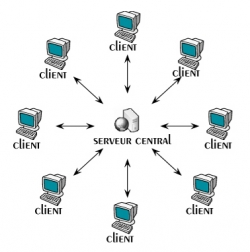
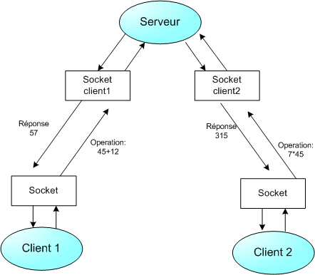
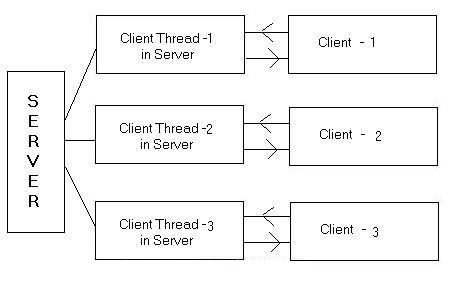

Bienvenue dans mon tout premier mini-tutoriel consacré aux sockets en langage Java. On ne va pas tout apprendre sur les sockets mais étudier le plus important concernant ces classes du répertoire java.net.
Je vous recommande également de lire le chapitre de Dalshim Bien fermer ses threads en Java si vous voulez bien maîtriser la fermeture de vos threads.
Les sockets servent à communiquer entre deux hôtes appelés Client / Serveur à l'aide d'une adresse IP et d'un port que j'appelle prise ; ces sockets permettront de gérer des flux entrant et sortant afin d'assurer une communication entre les deux (le client et le serveur), soit de manière fiable à l'aide du protocole TCP/IP, soit non fiable mais plus rapide avec le protocole UDP. Nous allons étudier le premier mode, le mode TCP/IP…
Voici ce qu'on peut réaliser à l'aide des sockets :
des jeux en ligne ;
des systèmes distribués ;
des espaces messengers comme MSN Messenger, Yahoo Messenger, … ;
des applications comme BitComet permettant de gérer les fichiers .torrent que vous connaissez ;
et bien d'autres choses.
Les sockets sont utilisés dans plusieurs autres langages, tels que :
Le package java.net de la plate-forme Java fournit une classe InetAddress qui nous permet de récupérer et manipuler son adresse internet, IP pour les intimes. Cette classe n'a pas de constructeur, pour pouvoir avoir une instance de cette classe on a besoin des méthodes de classe. Voici les méthodes dont je vous parle :
getLocalHost() : elle retourne un objet qui contient l'adresse IP de la machine locale.
getByName(String nom_de_l_machine) : elle retourne un objet qui contient l'adresse IP de la machine dont le nom est passé en paramètre.
getAllByName(String nom_de_l_machine) : elle retourne un tableau d'objets qui contient l'ensemble d'adresses IP de la machine qui correspond au nom passé en paramètre.
A présent, voyons les méthodes applicables à un objet de cette classe :
getHostName() : elle retourne le nom de la machine dont l'adresse est stockée dans l'objet.
getAddress() : elle retourne l'adresse IP stockée dans l'objet sous forme d'un tableau de 4 octets.
toString() : elle retourne un String qui correspond au nom de la machine et son adresse.
Et pour terminer un petit exemple :
import java.net.InetAddress;
import java.net.UnknownHostException;
public class Adressage {
public static void main(String[] zero) {
InetAddress LocaleAdresse ;
InetAddress ServeurAdresse;
try {
LocaleAdresse = InetAddress.getLocalHost();
System.out.println("L'adresse locale est : "+LocaleAdresse );
ServeurAdresse= InetAddress.getByName("www.siteduzero.com");
System.out.println("L'adresse du serveur du site du zéro est : "+ServeurAdresse);
} catch (UnknownHostException e) {
e.printStackTrace();
}
}
}
Et le résultat est :
L'adresse locale est : softdeath/239.254.78.177
L'adresse du serveur du site du zéro est : www.siteduzero.com/80.248.219.123
Fastoche, hein ? :magicien:
Nous savons maintenant comment récupérer l'adresse IP de notre machine ou d'une machine distante, que diriez-vous si l'on l'utilisait pour créer notre tout premier socket ? C'est parti ;)
Un socket est un point de terminaison d'une communication bidirectionnelle, c'est-à-dire entre un client et un serveur en cours d'exécution sur un réseau donné. Les deux sont liés par un même numéro de port TCP de sorte que la couche puisse identifier la demande de partage de données.
Un serveur fonctionne sur une machine bien définie et est lié à un numéro de port spécifique. Le serveur se met simplement à l'écoute d'un client, qui demande une connexion.

En outre, java.net comprend la classe ServerSocket, qui met en oeuvre une sorte de prise que les serveurs peuvent utiliser pour écouter et accepter les connexions des clients. Ce qui nous donne :
ServerSocket socketserver = new ServerSocket(numero_port);
Ainsi on obtient un objet de la classe ServerSocket sur un port spécifique : si ce dernier est à 0, le socket est créée sur n'importe quel port libre.
Il existe deux autres constructeurs ; l'un a deux paramètres, le premier est bien sûr le numéro de port et le nombre total de connexion simultanées acceptées, voyez :
ServerSocket socketserver = new ServerSocket(numer_port,nbr_max);
nbr_max est le nombre maximal de connexions traitées simultanément. Par exemple au-delà de cinq tentatives de connexion consécutives autorisées, les connexions sont refusés.
Pour le second constructeur il suffit de spécifier l'adresse locale du serveur.
ServerSocket socketserver = new ServerSocket(numer_port,nbr_max,adresse_locale);
Quant au client, celui-ci connaît le nom de la machine sur laquelle le serveur est en exécution et le numéro de port sur lequel il écoute. Le client va demander une connexion au serveur en s'identifiant avec son adresse IP ainsi que le numéro de port qui lui est lié.
Pour cela, le package java.net fournit une classe Socket qui met en œuvre une connexion bidirectionnelle entre votre programme Java et un autre programme situé sur le réseau. La classe Socket permet de cacher les détails d'implémentation de cette connexion. En utilisant cette classe en lieu et place d'un code natif, vos programmes peuvent communiquer sur le réseau quel que soit la plateforme sur laquelle ils se trouvent. La création d'un socket pour un programme client s'effectue à l'aide d'un des constructeurs suivants :
Socket socket = new Socket(param1, param2)
Le premier paramètre correspond à l'identité du client, il peut être une chaine de caractère ou de type InetAddress, param2 correspond au numéro de port sur lequel on souhaite se connecter sur le serveur. Il est possible également de spécifier son adresse local comme troisième paramètre et le numéro de port local :
Socket socket = new Socket(adresse_distante, port_distant, adresse_locale, port_locale)
Après tentative de connexion, si tout va bien, le serveur accepte la connexion du client, et reçoit un nouveau socket qui est directement lié au même port local. Il a besoin d'une nouvelle prise de sorte qu'elle puisse continuer à écouter le socket d'origine pour les demandes de connexion, tout t'en satisfaisant les besoins du client connecté. Voici comment accepter une connexion d'un client :
Socket socketduserveur = socketserver.accept();
Une fois le socket créé, l'attente de connexion provenant du client se fait à l'aide de la méthode accept().
Afin d'éviter une attente infinie, il est possible de spécifier un délai maximal d'attente à l'aide d'un mutateur setSoTimeout.
Si un timeout est une valeur strictement positive, l'appel accept() va générer une attente maximale égale à timeout. Si ce temps expire, une exception de type InterruptedIOException est levée sans toute fois que la socket de type ServerSocket ne soit invalidée. La lecture de ce timeout se fait à l'aide de l'accesseur getSoTimeout().
Côté client, si la connexion est acceptée, une socket est créé et le client peut utiliser la socket pour communiquer avec le serveur. L'établissement d'une connexion peut lever une exception de type IOException.
On va essayer d'établir une communication. Vous avez tout les éléments à portée de main, vous pouvez désormais établir une connexion, au boulot ! :pirate:
...Ce n'était pas si difficile que ça, voyons la correction :) Le client et le serveur peuvent à présent communiquer par l'écriture ou la lecture de leurs prises. :)
Serveur.java
import java.io.IOException;
import java.net.ServerSocket;
import java.net.Socket;
public class Serveur {
public static void main(String[] zero) {
ServerSocket socketserver ;
Socket socketduserveur ;
try {
socketserver = new ServerSocket(2009);
socketduserveur = socketserver.accept();
System.out.println("Un zéro s'est connecté !");
socketserver.close();
socketduserveur.close();
}catch (IOException e) {
e.printStackTrace();
}
}
}
Client.java
import java.io.IOException;
import java.net.InetAddress;
import java.net.Socket;
import java.net.UnknownHostException;
public class Client {
public static void main(String[] zero) {
Socket socket;
try {
socket = new Socket(InetAddress.getLocalHost(),2009);
socket.close();
}catch (UnknownHostException e) {
e.printStackTrace();
}catch (IOException e) {
e.printStackTrace();
}
}
}
Vous venez d'établir votre première connexion entre un serveur et un client :magicien: . Maintenant, voyons comment envoyer et recevoir des messages.
Une fois la connexion établie et les sockets en possession, il est possible de récupérer le flux d'entrée et de sortie de la connexion TCP vers le serveur. Il existe deux méthodes pour permettre la récupération des flux :
getInputStream() de la classe InputStream. Elle nous permet de gérer les flux entrant ;
getOutputStream() de la classe OuputStream. Elle nous permet de gérer les flux sortant.
Ces deux méthodes nous permettent donc de gérer les flux en entrée et en sortie. En général le type d'entrée et sortie utilisé est BufferedReader et InputStreamReader pour la lecture, PrintWriter pour l'écriture. Mais on peut utiliser tous les autres flux.
En se basant sur l'annexe du tuto Java :
BufferedReader : cette classe permet de lire des caractères à partir d'un flux tamponné, afin de faire des lectures plus rapides ;
InputStreamReader : convertit un flux binaire en flux de caractères : elle convertit un objet de type InputStream en objet de type Reader ;
PrintWriter : la classe PrintWriter ajoute à un flux la possibilité de faire des écritures sous forme de texte des types primitifs Java, et des chaînes de caractères.
Un petit exemple de communication en image et en code source :

Serveur.java
import java.io.BufferedReader;
import java.io.IOException;
import java.io.InputStreamReader;
import java.io.PrintWriter;
import java.net.InetAddress;
import java.net.ServerSocket;
import java.net.Socket;
import java.net.UnknownHostException;
import java.io.PrintWriter;
public class Serveur {
public static void main(String[] zero) {
ServerSocket socketserver ;
Socket socketduserveur ;
BufferedReader in;
PrintWriter out;
try {
socketserver = new ServerSocket(2009);
System.out.println("Le serveur est à l'écoute du port "+socketserver.getLocalPort());
socketduserveur = socketserver.accept();
System.out.println("Un zéro s'est connecté");
out = new PrintWriter(socketduserveur.getOutputStream());
out.println("Vous êtes connecté zéro !");
out.flush();
socketduserveur.close();
socketserver.close();
}catch (IOException e) {
e.printStackTrace();
}
}
}
Client.java
import java.io.BufferedReader;
import java.io.IOException;
import java.io.InputStreamReader;
import java.io.PrintWriter;
import java.net.InetAddress;
import java.net.Socket;
import java.net.UnknownHostException;
public class Client {
public static void main(String[] zero) {
Socket socket;
BufferedReader in;
PrintWriter out;
try {
socket = new Socket(InetAddress.getLocalHost(),2009);
System.out.println("Demande de connexion");
in = new BufferedReader (new InputStreamReader (socket.getInputStream()));
String message_distant = in.readLine();
System.out.println(message_distant);
socket.close();
}catch (UnknownHostException e) {
e.printStackTrace();
}catch (IOException e) {
e.printStackTrace();
}
}
}
Résultat chez le serveur :
Le serveur est à l'écoute du port 2009
Un zéro s'est connecté
Résultat chez le client :
Demande de connexion
Vous êtes connecté zéro !
Ho là ! Un instant ! C'est quoi, ces encapsulations et ce flush ?
Rassurez-vous, on va tout expliquer en détail ( ^^ ), surtout ne vous affolez pas.
Côté Serveur
Après établissement de la connexion, le serveur obtient son socket qu'il utilise pour gérer le flux sortant à l'aide de socketduserveur.getOutputStream() ; ensuite, à l'aide de la méthode println on envoie un message au client, on utilise flush pour vider le buffer tout simplement. Et pour finir on ferme la connexion.
Côté Client
Après avoir obtenu notre socket, on utilise socket.getInputStream() pour récupérer le flux sortant. La méthode readLine() nous permet de lire une chaîne de caractères. Il existe plusieurs autres méthodes telles :
readInt() permettant de lire un entier ;
readDouble() permettant de lire un nombre de type double ;
…
Pour finir, on affiche le message reçu et on ferme notre socket.
Ça a l'air très simple à première vue pour deux hôtes, mais si l'on veut que plus que deux puissent communiquer entre eux à la fois, comment faire ? D'où la nécessité d'utiliser les Threads.
Utilisation des threads
Je pars du principe que vous connaissez ce que sont les threads et comment les utiliser et pourquoi doit-on les utiliser dans nos programme, on va donc attaquer directement la pratique.
Le principe d'utilisation des Threads est simple (sera simple si vous suivez attentivement :D). Après avoir créer un objet ServerSocket par le serveur, on le place (l'objet) comme paramètre à un constructeur de la classe qui implémente la classe Runnable ou étend la classe Thread, dès qu'un client souhaite se connecter avec le serveur, un Thread s'occupe de la connexion, il ne sera plus la peine de faire appel au serveur lorsqu'un client souhaite se connecter, tout le boulot sera confié à un Thread. Vous commencez à comprendre l'utilité des Threads ;) avec le temps vous ne pourrez plus vous en passer.
Voyons un petit exemple de connexion Multi-Threads en image et avec un code source toujours :

Serveur.java
import java.io.IOException;
import java.net.*;
public class Serveur {
public static void main(String[] zero){
ServerSocket socket;
try {
socket = new ServerSocket(2009);
Thread t = new Thread(new Accepter_clients(socket));
t.start();
System.out.println("Mes employeurs sont prêts !");
} catch (IOException e) {
e.printStackTrace();
}
}
}
class Accepter_clients implements Runnable {
private ServerSocket socketserver;
private Socket socket;
private int nbrclient = 1;
public Accepter_clients(ServerSocket s){
socketserver = s;
}
public void run() {
try {
while(true){
socket = socketserver.accept(); // Un client se connecte on l'accepte
System.out.println("Le client numéro "+nbrclient+ " est connecté !");
nbrclient++;
socket.close();
}
} catch (IOException e) {
e.printStackTrace();
}
}
}
Client.java
import java.io.IOException;
import java.net.*;
public class Client {
public static void main(String[] zero){
Socket socket;
try {
socket = new Socket("localhost",2009);
socket.close();
} catch (IOException e) {
e.printStackTrace();
}
}
}
Résulats :
Mes employeurs sont prêts !
Le client numero 1 est connecté !
Le client numero 2 est connecté !
Le client numero 3 est connecté !
Si vous m'avez bien suivis vous ne devriez pas avoir du mal à comprendre ce code. Dès que quelqu'un tape à la porte, on demande à un employer de lui ouvrir la porte, celui-là va le saluer et lui dire bye bye avec socket.close(); s'il ne veut pas parler (communiquer) :-° .
À présent que nous savons su manier les sockets en utilisant les threads, réalisons un petit programme client / serveur : après la connexion du client, celui-ci devra s'authentifier en premier, le serveur va vérifier dans un fichier la validité de ses données ; si tout est O.K., un message lui dira qu'il est connecté, ils pourront ensuite envoyer tous leurs messages au serveur. Voilà : très simple.
On devra avoir quelque chose de ce genre côté serveur, pour plusieurs clients à la fois :
Le serveur est à l'écoute du port 2009
Un zéro veut se connecter
softdeath vient de se connecter
softdeath : salut, M. le serveur, j'ai besoin de vos services.
Un zéro veut se connecter
chabanus vient de se connecte
chabanus : salut, j'ai besoin d'accéder à telles données.
et du côté du client, tête-à-tête avec le serveur après connexion :
Demande de connexion
Connexion établie avec le serveur, authentification :
Entrez votre login :
chabanus
Entrez votre mot de passe :
chabanus
Je suis connecté
Votre message :
salut
Le serveur vous dit : salut
Votre message :
ça va ?
Le serveur vous dit : bien et toi ?
Allez au boulot !
… … …
… J'espère que vous avez au moins essayé. :euh: Cette solution n'est ni unique ni la meilleure, elle est simple et minimale pour vous montrer comment les threads doivent être gérés. Voyons la correction :
Côté Serveur
Accepter_connexion.java
import java.io.*;
import java.net.*;
public class Accepter_connexion implements Runnable{
private ServerSocket socketserver = null;
private Socket socket = null;
public Thread t1;
public Accepter_connexion(ServerSocket ss){
socketserver = ss;
}
public void run() {
try {
while(true){
socket = socketserver.accept();
System.out.println("Un zéro veut se connecter ");
t1 = new Thread(new Authentification(socket));
t1.start();
}
} catch (IOException e) {
System.err.println("Erreur serveur");
}
}
}
Authentification .java
import java.net.*;
import java.util.NoSuchElementException;
import java.util.Scanner;
import java.io.*;
public class Authentification implements Runnable {
private Socket socket;
private PrintWriter out = null;
private BufferedReader in = null;
private String login = "zero", pass = null;
public boolean authentifier = false;
public Thread t2;
public Authentification(Socket s){
socket = s;
}
public void run() {
try {
in = new BufferedReader(new InputStreamReader(socket.getInputStream()));
out = new PrintWriter(socket.getOutputStream());
while(!authentifier){
out.println("Entrez votre login :");
out.flush();
login = in.readLine();
out.println("Entrez votre mot de passe :");
out.flush();
pass = in.readLine();
if(isValid(login, pass)){
out.println("connecte");
System.out.println(login +" vient de se connecter ");
out.flush();
authentifier = true;
}
else {out.println("erreur"); out.flush();}
}
t2 = new Thread(new Chat_ClientServeur(socket,login));
t2.start();
} catch (IOException e) {
System.err.println(login+" ne répond pas !");
}
}
private static boolean isValid(String login, String pass) {
boolean connexion = false;
try {
Scanner sc = new Scanner(new File("zero.txt"));
while(sc.hasNext()){
if(sc.nextLine().equals(login+" "+pass)){
connexion=true;
break;
}
}
} catch (FileNotFoundException e) {
System.err.println("Le fichier n'existe pas !");
}
return connexion;
}
}
Chat_ClientServeur.java
import java.io.BufferedReader;
import java.io.IOException;
import java.io.InputStreamReader;
import java.io.PrintWriter;
import java.net.Socket;
public class Chat_ClientServeur implements Runnable {
private Socket socket = null;
private BufferedReader in = null;
private PrintWriter out = null;
private String login = "zero";
private Thread t3, t4;
public Chat_ClientServeur(Socket s, String log){
socket = s;
login = log;
}
public void run() {
try {
in = new BufferedReader(new InputStreamReader(socket.getInputStream()));
out = new PrintWriter(socket.getOutputStream());
Thread t3 = new Thread(new Reception(in,login));
t3.start();
Thread t4 = new Thread(new Emission(out));
t4.start();
} catch (IOException e) {
System.err.println(login +"s'est déconnecté ");
}
}
}
import java.io.*;
import java.net.*;
public class Serveur {
public static ServerSocket ss = null;
public static Thread t;
public static void main(String[] args) {
try {
ss = new ServerSocket(2009);
System.out.println("Le serveur est à l'écoute du port "+ss.getLocalPort());
t = new Thread(new Accepter_connexion(ss));
t.start();
} catch (IOException e) {
System.err.println("Le port "+ss.getLocalPort()+" est déjà utilisé !");
}
}
}
Côté Client
Chat_ClientServeur.java
import java.io.*;
import java.net.*;
import java.util.Scanner;
public class Chat_ClientServeur implements Runnable {
private Socket socket;
private PrintWriter out = null;
private BufferedReader in = null;
private Scanner sc;
private Thread t3, t4;
public Chat_ClientServeur(Socket s){
socket = s;
}
public void run() {
try {
out = new PrintWriter(socket.getOutputStream());
in = new BufferedReader(new InputStreamReader(socket.getInputStream()));
sc = new Scanner(System.in);
Thread t4 = new Thread(new Emission(out));
t4.start();
Thread t3 = new Thread(new Reception(in));
t3.start();
} catch (IOException e) {
System.err.println("Le serveur distant s'est déconnecté !");
}
}
}
Client.java
import java.io.*;
import java.net.*;
public class Client {
public static Socket socket = null;
public static Thread t1;
public static void main(String[] args) {
try {
System.out.println("Demande de connexion");
socket = new Socket("127.0.0.1",2009);
System.out.println("Connexion établie avec le serveur, authentification :"); // Si le message s'affiche c'est que je suis connecté
t1 = new Thread(new Connexion(socket));
t1.start();
} catch (UnknownHostException e) {
System.err.println("Impossible de se connecter à l'adresse "+socket.getLocalAddress());
} catch (IOException e) {
System.err.println("Aucun serveur à l'écoute du port "+socket.getLocalPort());
}
}
}
Connexion.java
import java.net.*;
import java.util.Scanner;
import java.io.*;
public class Connexion implements Runnable {
private Socket socket = null;
public static Thread t2;
public static String login = null, pass = null, message1 = null, message2 = null, message3 = null;
private PrintWriter out = null;
private BufferedReader in = null;
private Scanner sc = null;
private boolean connect = false;
public Connexion(Socket s){
socket = s;
}
public void run() {
try {
out = new PrintWriter(socket.getOutputStream());
in = new BufferedReader(new InputStreamReader(socket.getInputStream()));
sc = new Scanner(System.in);
while(!connect ){
System.out.println(in.readLine());
login = sc.nextLine();
out.println(login);
out.flush();
System.out.println(in.readLine());
pass = sc.nextLine();
out.println(pass);
out.flush();
if(in.readLine().equals("connecte")){
System.out.println("Je suis connecté ");
connect = true;
}
else {
System.err.println("Vos informations sont incorrectes ");
}
}
t2 = new Thread(new Chat_ClientServeur(socket));
t2.start();
} catch (IOException e) {
System.err.println("Le serveur ne répond plus ");
}
}
}
Lancez serveur.java et ensuite client.java, n'oubliez pas de créer un fichier pour le serveur pour qu'il puisse y vérifier l'identité de ses clients, je l'ai nommé zero.txt : vous pouvez le nommer comme vous le souhaitez, c'est à votre guise.
Optimisation : Pour ne pas dire qu'il en existe à l'infini, plusieurs autres possibilités s'offrent à vous, vous pouvez :
rendre l'application client / client. Le serveur authentifie les deux clients et ces deux-là pourront discuter ensemble sans que d'autres puissent y entrer : grosso modo réaliser un « salon », comme on l'appelle ;
utiliser les bases de données pour la sauvegarde des messages et pour authentifier les clients ;
réaliser une interface graphique en swing ou en awt ;
…
Croyez-moi : lorsque vous maîtriserez les sockets en utilisant les threads, rien ne sera plus compliqué pour vous. ;) Bonne continuation à tous ; surtout n'hésitez pas à l'améliorer et envoyez-moi un MP pour m'exposer votre travail.
Le mode UDP est plus rapide que le mode TCP mais c'est une communication non fiable, car on ne se préoccupe pas du résultat de la réception du récepteur, il est donc moins utilisé. Maintenant que vous savez manier les sockets, le mode UDP ne devrait pas vous poser de problème ;) .
Je vous remercie d'avoir lu le tutoriel, il est à présent terminé. J'espère que vous avez bien suivi :)
À la prochaine pour un autre tutoriel client/serveur ! La technologie RMI (Remote Method Invocation) ! Qui vous permettra de mieux comprendre la nature et la fonction des EJB (Entreprise JavaBeans) qui représente l'étendard de la plate-forme J2EE !